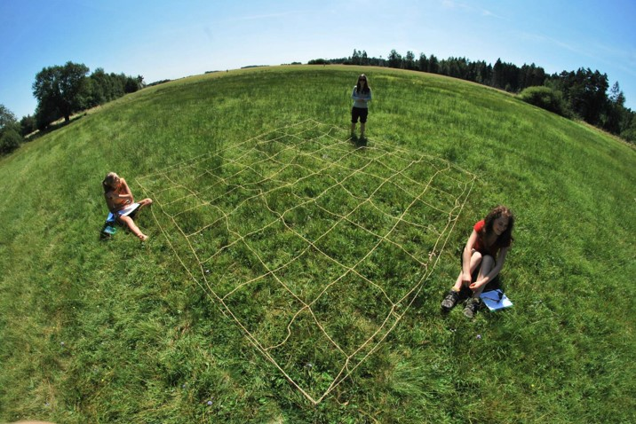
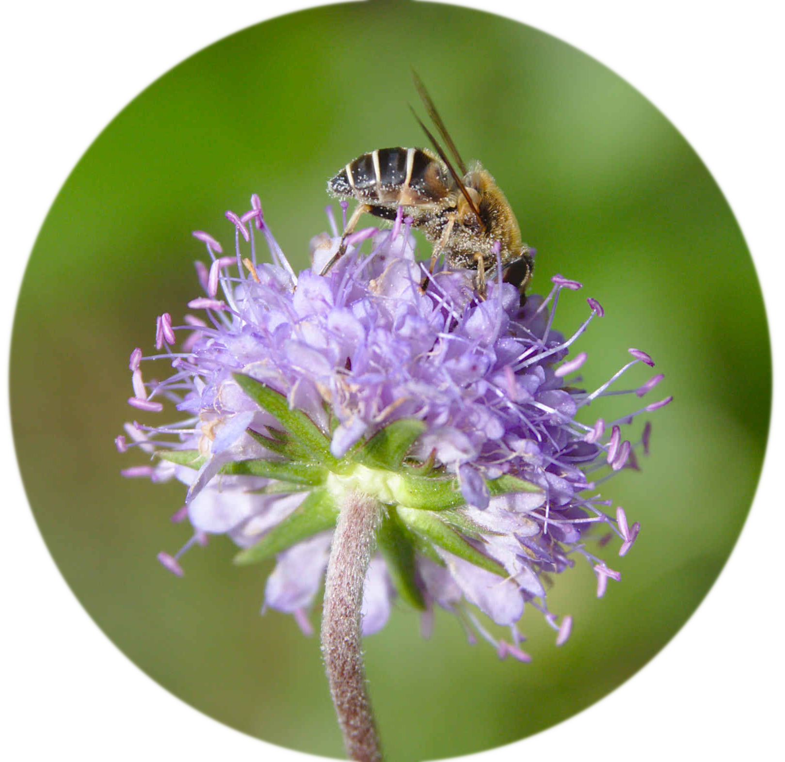

Architecture of stability: 15 years of pollinator sharing reveal a role of stable core species
Jakub Štenc1,2,3, Sailee P. Sakhalkar4, Jiří Hadrava2, Michael Mikát2, Eva Matoušková1, Helena Pijálková2, Tadeáš Ryšan2,5, Petr Švanda1,2, Martin Freudenfeld1, Eva Horčičková6, Zdeněk Janovský7, Jakub Straka2, Jordi Bosch3
1Charles University (Botany) | 2Charles University (Zoology) | 3CREAF, Spain
Architecture of stability: 15 years of pollinator sharing reveal a role of stable core species
Jakub Štenc1,2,3, Sailee P. Sakhalkar4, Jiří Hadrava2, Michael Mikát2, Eva Matoušková1, Helena Pijálková2, Tadeáš Ryšan2,5, Petr Švanda1,2, Martin Freudenfeld1, Eva Horčičková6, Zdeněk Janovský7, Jakub Straka2, Jordi Bosch3
1Charles University (Botany) | 2Charles University (Zoology) | 3CREAF, Spain


Methods - the locality


- 15 years of data collection (2011-2025)
Methods - permanent plots


Methods - plant-pollinator survey


Methods - pollinator survey
- “Snapshot” of plant-pollinator interaction
- 20+ sampling per plot per year
- 97 629+ interactions recorded
Methods - plant-pollinator survey

Next Step: Real Pollen Deposition Dynamics

Eristalis interruptus carrying heterospecific pollen loads

Stigmatic pollen deposition on Succisa pratensis
Linking visitation architecture to actual stigmatic pollen deposition, heterospecific clogging, and plant seed set!
Ecoflor 2027!
Thank you for your attention!
Jakub Štenc
jakubstenc@gmail.com | +420 774 553 734
Charles University, Prague & CREAF, Barcelona
🌸 Save the date: Ecoflor 2027 in Prague!